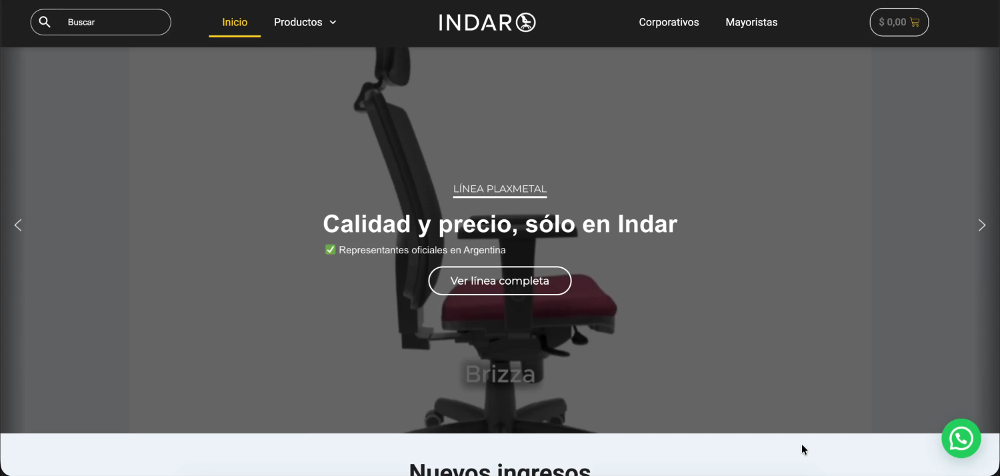
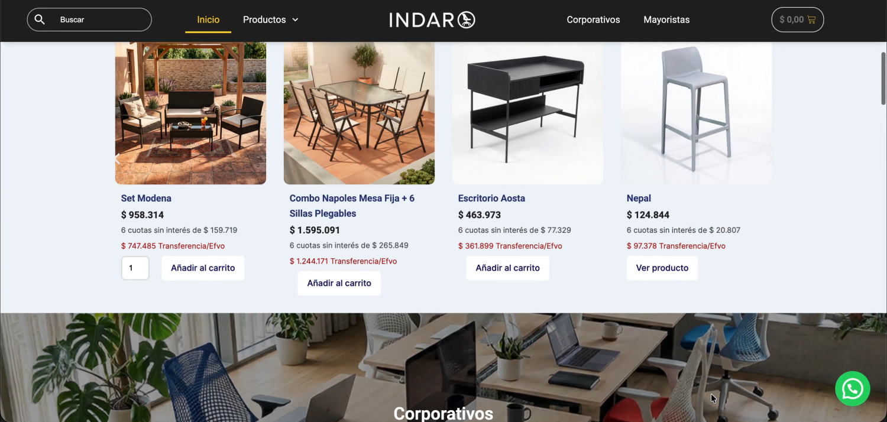
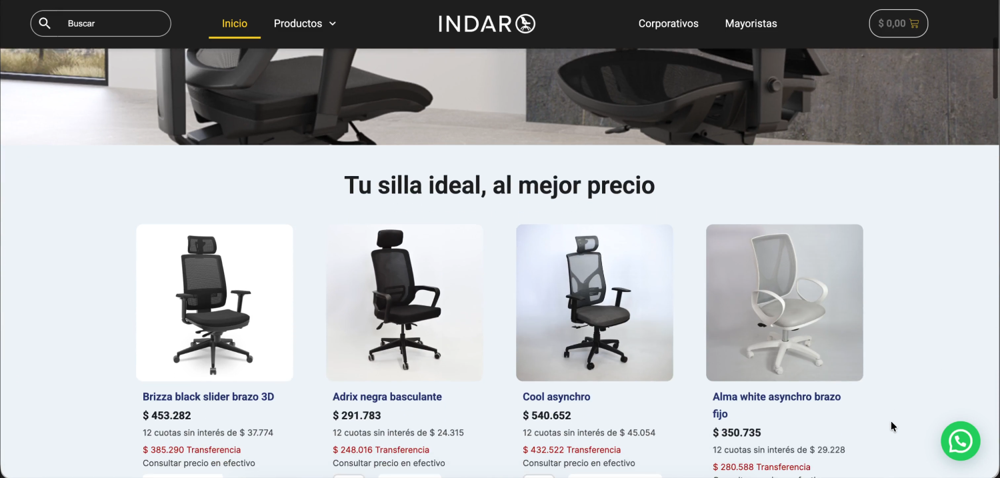
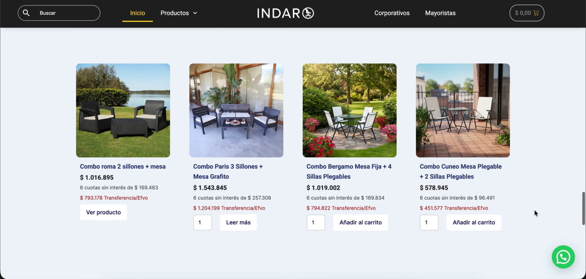
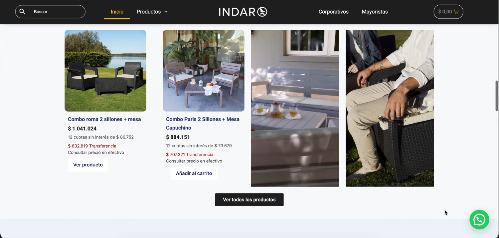
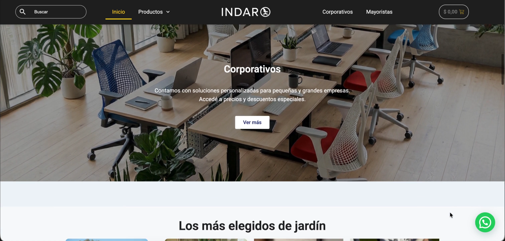
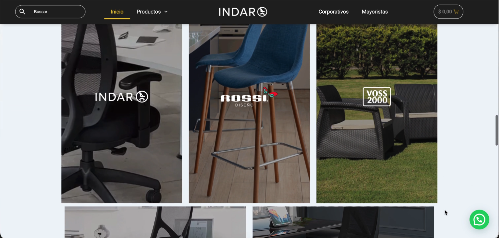
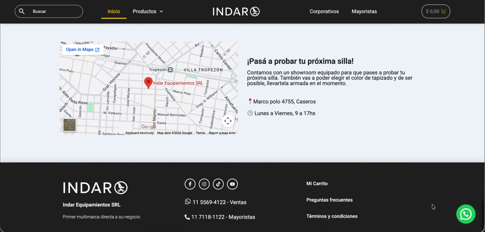

Turning a product feed into a store that sells.De un feed de productos a una tienda que vende.
Indar Equipamientos is a multi-brand seating and furniture distributor with a showroom in Caseros. The store was already online and already selling, so the redesign had to keep every URL and every product working while changing how the catalogue is read.Indar Equipamientos es un distribuidor multimarca de sillas y mobiliario con showroom en Caseros. La tienda ya estaba online y ya vendía, así que el rediseño tenía que mantener cada URL y cada producto funcionando mientras cambiaba la forma de leer el catálogo.
See it live ↗Ver la tienda ↗The home page showed stock, not intent.La home mostraba stock, no intención.
The old home opened with a brand promo and then a "Nuevos ingresos" feed: a garden set, a dining table, a desk and a stool in one row, ordered by whatever had been loaded last. Below it, six office chairs in an unbroken grid. Nothing on the page told you which of the five product families you were in.La home anterior abría con una promo de marca y después un feed de "Nuevos ingresos": un juego de jardín, una mesa, un escritorio y un taburete en la misma fila, ordenados por lo último cargado. Debajo, seis sillas de oficina en una grilla sin cortes. Nada en la página decía en cuál de las cinco familias estabas.
Indar sells to four different buyers — one person buying a chair, an office manager equipping a floor, a garden shopper, a wholesaler — and the page treated all of them the same.Indar le vende a cuatro compradores distintos — alguien que compra una silla, un responsable que equipa una oficina, alguien que busca jardín, un mayorista — y la página los trataba a todos igual.
The redesign gave every section a name, a reason and a way out.El rediseño le dio a cada sección un nombre, un motivo y una salida.
Four changes that moved the store.Cuatro cambios que movieron la tienda.






The parts that were already working.Las partes que ya funcionaban.


